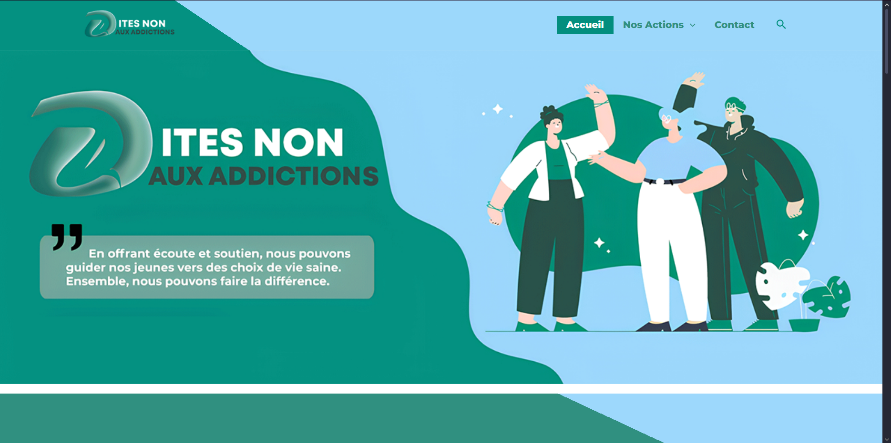
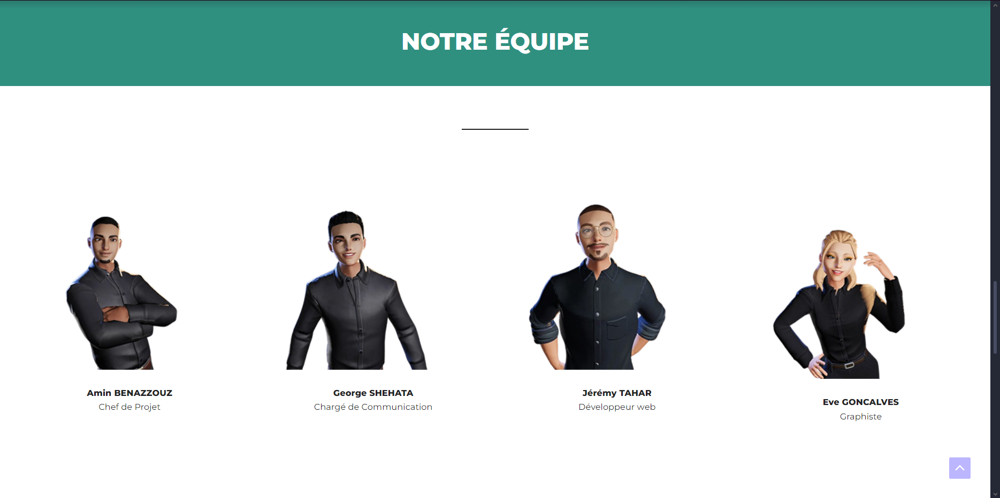

Dites Non aux Addictions
"Dites Non aux Addictions" is the name of a civic project I created with a group during my first year in MMI. It was certainly the biggest project of the year, where we had to develop a credible concept and manage all its communication. As part of this project, we were tasked with creating a WordPress site.
The "Dites Non aux Addictions" website was built exclusively using WordPress and its plugins. I worked on it in a duo with one of my colleagues. Together, we strived to create the best possible site using a CMS we barely knew.
